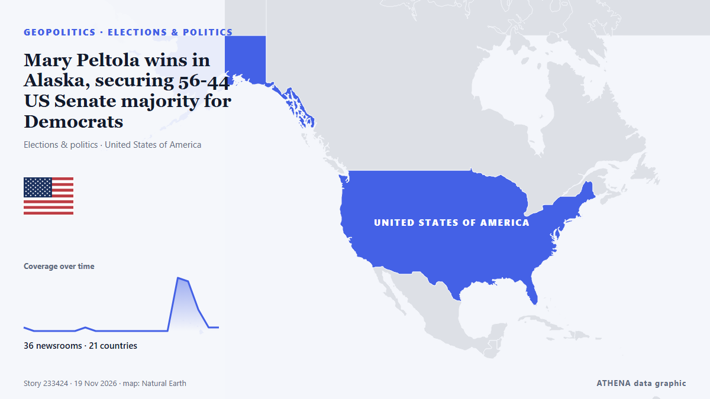

Mary Peltola wins in Alaska, securing 56-44 US Senate majority for Democrats

It's nine Senate seats flipped by the Democrats, most since 1958. από Times of India (World)
Τι άλλαξε 3 νέες αναφορές από 3 μέσα τις τελευταίες 24 ώρες.
Δείτε τις πηγές ›Τεκμήριωση: Ισχυρή
Αναφέρθηκε ανεξάρτητα από 38 μέσα σε 22 χώρες από τις 14 Νοε, πρώτο το The Business Standard (Bangladesh) (working feed)· η κάλυψη εξασθενεί. Το ATHENA δεν βρίσκει ενδείξεις κινδύνου στην κάλυψη. Βεβαιότητα 92% (υψηλή): το επιβεβαιώνουν 38 ανεξάρτητα μέσα, μέση αξιοπιστία 74%. Μέσα ανά χώρα: Ηνωμένο Βασίλειο (5), Γαλλία (5), Ινδία (4). Κάλυψη: 14 Νοε έως 19 Νοε, 118 ώρες.
Γιατί έχει σημασία: Οι εξελίξεις στην ασφάλεια και τη διπλωματία μπορούν να μετατοπίσουν συμμαχίες, εμπόριο και αγορές πολύ πέρα από τις χώρες που εμπλέκονται.
Τι άλλαξε: 3 νέες αναφορές από 3 μέσα στο 24ωρο έως 20 Νοε.
Πρώτη διατύπωση: Alaska Count Will Settle Last Midterm Seat
ΑυτοματοποιημένοΕπιλέχθηκε, ομαδοποιήθηκε και βαθμολογήθηκε με τη δημοσιευμένη μέθοδο της ATHENA από 38 ανεξάρτητα μέσα. Ο τίτλος είναι του μέσου· οι προτάσεις της ATHENA ακολουθούν σταθερά πρότυπα - δεν τις γράφει παραγωγική ΤΝ. Πώς λειτουργεί →
Πώς να διαβάσετε αυτή τη σελίδα
- Τι διαβάζετε
- 38 μέσα σε 22 χώρες ανέφεραν αυτό το γεγονός. Οι αναφορές παρακάτω εμφανίζονται με τη σειρά που δημοσιεύτηκαν· κάθε τίτλος ανοίγει το αρχικό άρθρο. Το ATHENA δεν γράφει δικά του ρεπορτάζ.
- Η εκτίμησή μας
- Για την καταγραφή — Οι αναφορές περιγράφουν ένα ολοκληρωμένο, εσωτερικό, εμπορικό ή προσωπικό ζήτημα. Το καταγράφουμε ώστε να βλέπετε ποιος το ανέφερε και πότε. Δεν παρακολουθούμε εδώ κίνδυνο ευρύτερης σύγκρουσης.
- Πόσα στοιχεία υπάρχουν
- Ισχυρή Πολλά ανεξάρτητα μέσα σε πολλές χώρες περιγράφουν το ίδιο γεγονός.
Αφού αφαιρεθούν οι επαναλήψεις, τα άσχετα και τα παλιά στοιχεία, υπολογίζονται 34 από τις 40 αναφορές που παρατίθενται· το 100% των τίτλων αντιστοιχεί στο γεγονός.
- Τι δεν σημαίνει
- Το ATHENA μετρά πώς καλύπτεται ένα γεγονός, όχι αν είναι αληθές. Δεν είναι πρόβλεψη, κρίση για το ποιος έχει δίκιο ή συμβουλή.
- Τι θα την άλλαζε
- Αναφορές από άλλα ανεξάρτητα μέσα που δείχνουν διαφορετική εξέλιξη, ή σαφής επιβεβαίωση ή διάψευση από επίσημη πηγή.
Εκτίμηση R2 · ανανεώνεται με κάθε ενημέρωση της σελίδας. Το ATHENA δεν έχει δημοσιεύσει ακόμη ιστορικό επιδόσεων για αυτές τις εκτιμήσεις· όταν το κάνει, θα συνδέεται εδώ.
Με μια ματιά
Επιλέγεται, βαθμολογείται και γράφεται από τη δημοσιευμένη μεθοδολογία του ATHENA. Κανένας συντάκτης δεν παρεμβαίνει σε μεμονωμένα γεγονότα. Πώς παράγεται ›
| 14 Nov 06:10 UTC | 1 |
|---|---|
| 14 Nov 12:10 UTC | 0 |
| 14 Nov 18:10 UTC | 0 |
| 15 Nov 00:10 UTC | 0 |
| 15 Nov 06:10 UTC | 0 |
| 15 Nov 12:10 UTC | 0 |
| 15 Nov 18:10 UTC | 1 |
| 16 Nov 00:10 UTC | 0 |
| 16 Nov 06:10 UTC | 0 |
| 16 Nov 12:10 UTC | 0 |
| 16 Nov 18:10 UTC | 0 |
| 17 Nov 00:10 UTC | 0 |
| 17 Nov 06:10 UTC | 0 |
| 17 Nov 12:10 UTC | 0 |
| 17 Nov 18:10 UTC | 0 |
| 18 Nov 00:10 UTC | 15 |
| 18 Nov 06:10 UTC | 14 |
| 18 Nov 12:10 UTC | 6 |
| 18 Nov 18:10 UTC | 1 |
| 19 Nov 00:10 UTC | 2 |
| 19 Nov 06:10 UTC | 0 |
| 19 Nov 12:10 UTC | 1 |
| 19 Nov 18:10 UTC | 0 |
| 20 Nov 00:10 UTC | 1 |
Γιατί αυτοί οι αριθμοί
Σημασία
Πόσο πολύ και πόσο εμφανώς αναφέρεται η είδηση.
Κίνδυνος
Τι περιγράφουν οι αναφορές, βαθμολογημένο για πιθανή ζημιά. Δεν είναι πρόβλεψη.
Βεβαιότητα
Πόσο καλά την στηρίζουν οι ανεξάρτητες πηγές.
Η κάλυψη — ποιος το ανέφερε και πότε
ο τίτλος όπως δημοσιεύτηκε · ανοίγει το πρωτότυπο- The Business Standard (Bangladesh) (working feed) · ΜπανγκλαντέςPeltola extends lead in Alaska Senate race as final count approaches
- The Rio Times · ΒραζιλίαAlaska Count Will Settle Last Midterm Seat
- TRT World · ΤουρκίαDemocrat Mary Peltola wins in Alaska, securing 56-44 US Senate majority
- The Guardian · Ηνωμένο ΒασίλειοMary Peltola beats Republican Dan Sullivan in Alaska to give Democrats 56 Senate seats
- NPR · Ηνωμένες ΠολιτείεςMary Peltola flips Alaska's Senate seat into Democrats' column
- The Canadian Press (via CityNews) · ΚαναδάςDemocrats flipped 9 US Senate seats – the most in almost 70 years
- Times of India · ΙνδίαUS midterms: Peltola defeats Sullivan as Democrats clinch 56-44 Senate majority
- The Straits Times · ΣιγκαπούρηDemocrat Mary Peltola wins US Senate race in Alaska, beating incumbent Republican Dan Sullivan
- CBC News (alternative feed) · ΚαναδάςMary Peltola wins U.S. Senate seat in Alaska for Democrats
- Indian Express · ΙνδίαTrump wanted her prosecuted, but Mary Peltola just won Alaska’s Senate seat
- Anadolu Agency (English) · ΤουρκίαDemocrat Mary Peltola wins Alaska Senate race, unseats Republican incumbent
- CNBC World · Ηνωμένες ΠολιτείεςDemocrat Mary Peltola wins Alaska Senate election
- Times of India (World) · ΙνδίαDemocrats flip 9 US senate seats, marking biggest midterm gain in nearly 70 years
- Courthouse News · Ηνωμένες ΠολιτείεςBlue Dog Democrat flips Alaska in tightly contested Senate race
- Free Malaysia Today · ΜαλαισίαDemocrat Peltola wins in Alaska, securing 56-44 US Senate majority
- Financial Times - Markets · Ηνωμένο ΒασίλειοDemocrats win Alaska Senate seat to complete midterms victory
- Punch · ΝιγηρίαDemocrats secure 56-seat Senate majority as Peltola wins Alaska
- The Jerusalem Post · ΙσραήλDemocrat Peltola wins in Alaska, securing 56-44 US Senate majority
- Euronews English · ΓαλλίαDemocrat Mary Peltola unseats Republican and flips US Senate seat in tight race in Alaska
- DW English · ΓερμανίαUS Democrats flip Alaska Senate seat as Mary Peltola wins race
- Sky News (World) · Ηνωμένο ΒασίλειοDemocrat defeats Republican in Alaska in final midterms Senate race
- TheJournal.ie · ΙρλανδίαDemocrat Mary Peltola flips Alaska Senate seat after tight race that unseated Republican incumbent
- BBC News · Ηνωμένο ΒασίλειοDemocrats win Alaska Senate race two weeks after midterms counting began
- Cyprus Mail · ΚύπροςMary Peltola flips Alaska Senate, becomes first Alaska Native elected to US Senate
- Haaretz (English) · ΙσραήλU.S. Democrats flip Alaska Senate seat, winning a 56-seat majority
- Novinite · ΒουλγαρίαDemocrat Mary Peltola Defeats Sullivan in Historic Alaska Senate Upset
- Le Monde (English) · ΓαλλίαAlaska Democrat Mary Peltola flips US Senate seat in tight race
- ABC News Australia · ΑυστραλίαDemocrats defeat Republicans to win Alaska Senate race
- The Independent · Ηνωμένο ΒασίλειοDemocrat beats both Dan Sullivans in Alaska Senate race as final midterms result called
- Euronews English · ΓαλλίαCheers and reactions in Alaska after Mary Peltola's Senate win
- Al Jazeera English · ΚατάρWhy Democrat Mary Peltola’s US Senate win in Alaska matters
- Ada Derana · Σρι ΛάνκαMary Peltola flips Alaska Senate seat in another Democratic win
- Mothership · ΣιγκαπούρηUS Senate seat in Alaska called for Democrat Mary Peltola, wins 56 out of 100 seat majority
- France 24 English · ΓαλλίαDemocrat Mary Peltola wins Alaska Senate race in historic victory
- Tehran Times · ΙράνAlaska Native wins Senate race, gives Democrats 56 seats
- The National · Ηνωμένα Αραβικά ΕμιράταUS midterms 2026: Mary Peltola wins Alaska to secure 56-44 Senate majority for Democrats
- RFI English · ΓαλλίαAlaska flips to Democrats, giving party 56–44 US Senate majority
- The Daily Star — page reader · ΜπανγκλαντέςAlaska Democrat flips US Senate seat in tight race
- Times of India (World) · ΙνδίαMary Peltola wins in Alaska, securing 56-44 US Senate majority for Democrats
- The San Juan Daily Star · Πουέρτο ΡίκοDemocrats claim 56 Senate seats after Mary Peltola wins in Alaska